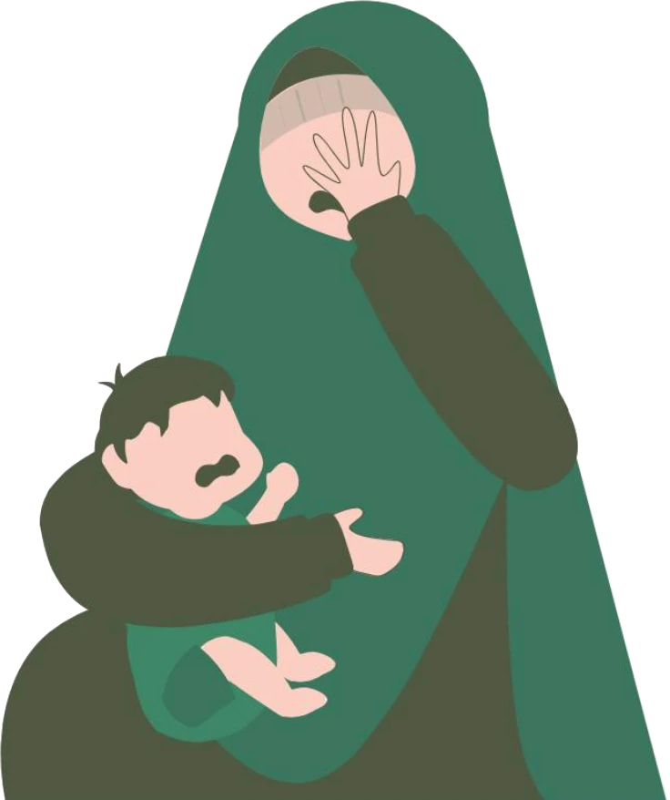

Soalan yang kerap ditanya
First-Time Mommies

SOALAN 1
Bila waktu sesuai
buat scan pertama?
JAWAPAN
Sebelum
12 minggu
Tepat kira tarikh bersalin Jangkaan tarikh kelahiran (EDD)
'Buka buku' sebelum minggu ke-12
SOALAN 2
Temu janji pertama,
nak bawa apa?
Tak perlu risau!
Bawa 3 benda ni je:
2
Telefon Untuk rujukan dan nota
3
Senarai soalan untuk doktor
Tekan link
di bawah
untuk buat temu janji
Kg Pandan · Semambu · Gambang · Melawati KL